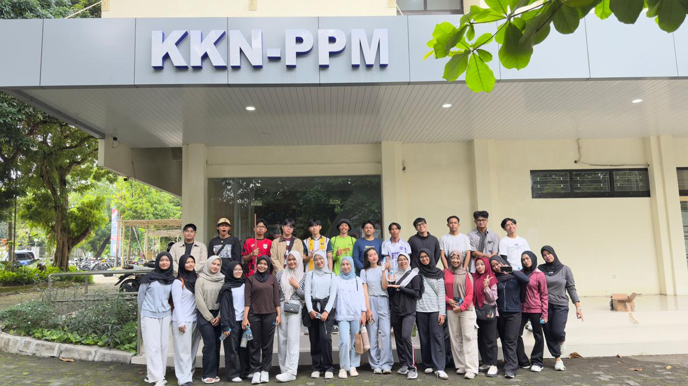
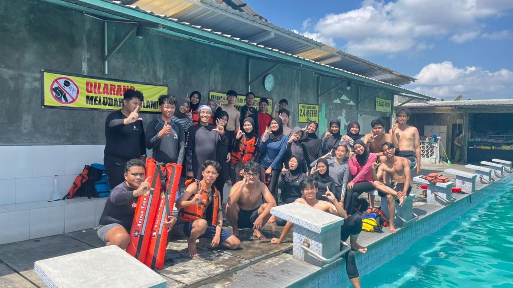
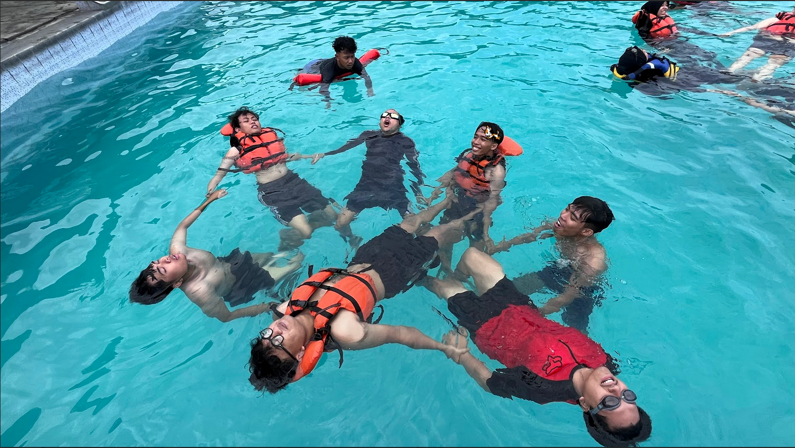
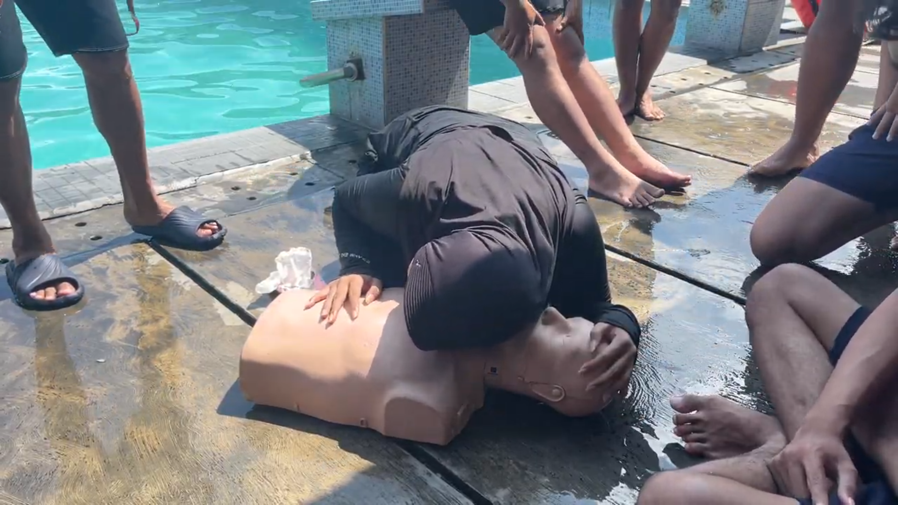

Rekap Kegiatan
Apa saja yang kami lakukan?
Bakti Kampus KKN-PPM UGM Periode II 2026
Jerowaru, 16 Mei 2026
Dokumentasi Tim Jerowaru Berseru setelah melaksanakan kegiatan.
Kegiatan Bakti Kampus oleh tim KKN-PPM UGM Jerowaru Berseru diawali dengan pengarahan oleh Direktorat Pengabdian kepada Masyarakat (DPkM) di titik kumpul sebelum mahasiswa diarahkan menuju lokasi bakti. Seluruh anggota tim hadir dengan mematuhi tata tertib kegiatan, yakni mengenakan pakaian yang rapi, sopan, dan bersepatu. Berbekal peralatan kebersihan serta kantong sampah (trashbag) yang dipersiapkan secara mandiri, para mahasiswa bergotong royong melaksanakan pembersihan lingkungan kampus secara terpadu.
Sampah yang telah terkumpul kemudian dimasukkan ke dalam trashbag dan diletakkan secara teratur di pinggir jalan guna mengefisienkan proses pengangkutan oleh armada truk sampah. Di sela-sela kegiatan, tim juga memanfaatkan waktu istirahat untuk menikmati perbekalan makanan dan minuman yang dibawa masing-masing. Lebih dari sekadar menjaga kebersihan lingkungan, agenda ini memiliki tujuan krusial untuk mempererat kerja sama dan membangun kekompakan tim Jerowaru Berseru sebagai persiapan esensial sebelum pelaksanaan KKN di lokasi pengabdian.

15Mei
Thoriq
/
Pra-KKN
Pelatihan Selam bersama Sentra Selam Jogja
Read MorePelatihan Selam bersama Sentra Selam Jogja
Jerowaru, 31 Mei 2026
Kegiatan pelatihan dasar penyelaman oleh anggota tim.
Pada hari Jumat, 15 Mei 2026, tim KKN-PPM UGM Jerowaru Berseru menyelenggarakan kegiatan pelatihan mitigasi bencana perairan yang berkolaborasi dengan instruktur profesional dari Sentra Selam Jogja. Kegiatan ini dirancang secara khusus untuk membekali seluruh anggota tim dengan pengetahuan dan keterampilan praktis terkait keselamatan darurat di wilayah pesisir dan perairan.

Sesi pembiasaan diri dengan lingkungan air dengan membentuk lingkaran bersama-sama.
Agenda pelatihan diawali dengan sesi pembekalan materi secara teori yang berfokus pada protokol keselamatan dasar. Setelah itu, tim langsung diarahkan untuk turun ke kolam guna melakukan tahap pembiasaan diri di perairan. Langkah ini merupakan fondasi krusial agar mahasiswa dapat beradaptasi dan menjaga ketenangan sebelum memasuki tahapan simulasi penyelamatan fisik.
Setelah proses adaptasi selesai, kegiatan dilanjutkan dengan simulasi penanganan korban. Para peserta dilatih secara langsung mengenai teknik praktik penyelamatan korban menggunakan pelampung pelingkar. Lebih lanjut, instruktur juga mendemonstrasikan dan memandu tata cara evakuasi korban yang efektif dan terstandar menggunakan alat bantu rescue tube.
Sebagai puncak dari rangkaian edukasi kebencanaan ini, tim diberikan materi medis darurat yang berfokus pada penanganan pasca-evakuasi. Para mahasiswa mempraktikkan tata cara pemberian pertolongan pertama pada korban tenggelam melalui teknik Resusitasi Jantung Paru (CPR). Pelatihan ini diharapkan mampu meningkatkan kesiapsiagaan tim dalam menghadapi potensi risiko di lokasi pengabdian kelak.

Pelatihan pertolongan pertama bagi korban tenggelam menggunakan teknik CPR.